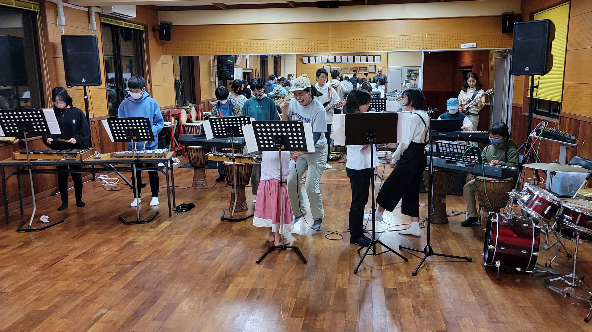

On September 6-11, 2022 (EXAMPLE DATE ONLY), Mishima Mura Iojima island is holding a festival for musicians of all ages and abilities, from beginners to world-class professionals.
This is not a concert festival. It is an event for people who wish to play, learn, and grow as musicians. Guests are invited and expected to participate, not just listen.
The idea is partly inspired by the musical learning philosophy of the famous bassist Victor Wooten, who asserts that music is a language. Like all languages, we do not learn by studying, we learn by conversing with others. Children learning to speak do not only talk with other children, converse with expert language speakers (adults); in musical terms, as beginners they are allowed to jam with professionals!
Here is a video of Victor Wooten explaining his philosophy with subtitles in Japanese:
Iojima is a perfect location for musicians to play, interact, learn, and grow. It is a volcanic island with a small population and a spectacular natural setting, away from the noise and distraction of the city.

Astonishingly for such a small village, it features many comfortable venues for music, including:
The African Djembe School, with:

The Community Center, with a large gymnasium with a stage at one end
The Village Center with a theatre room